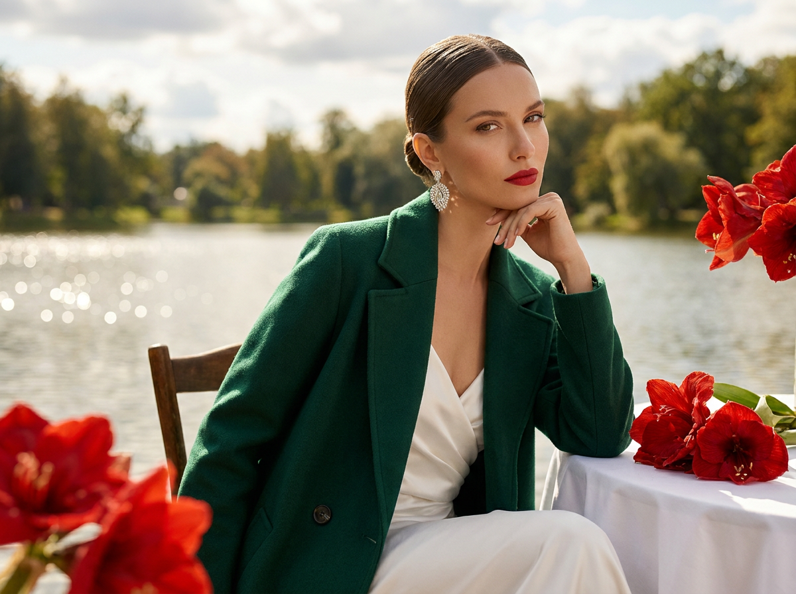
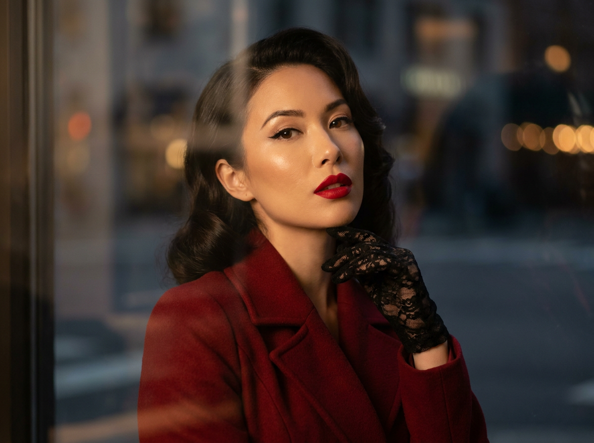
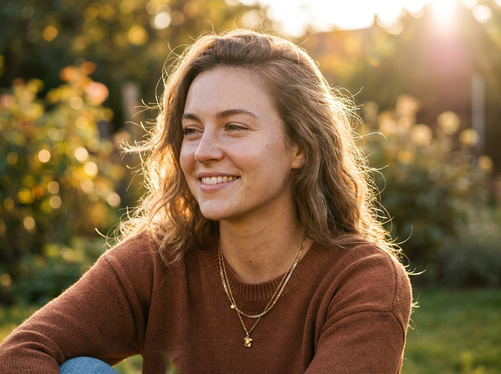
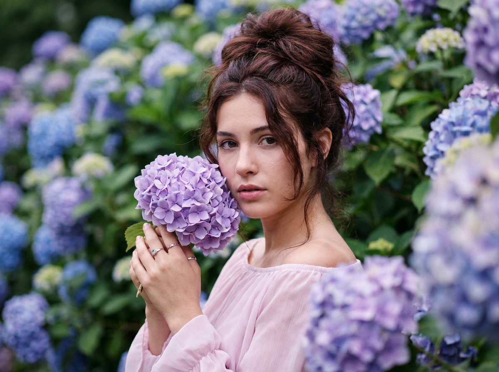
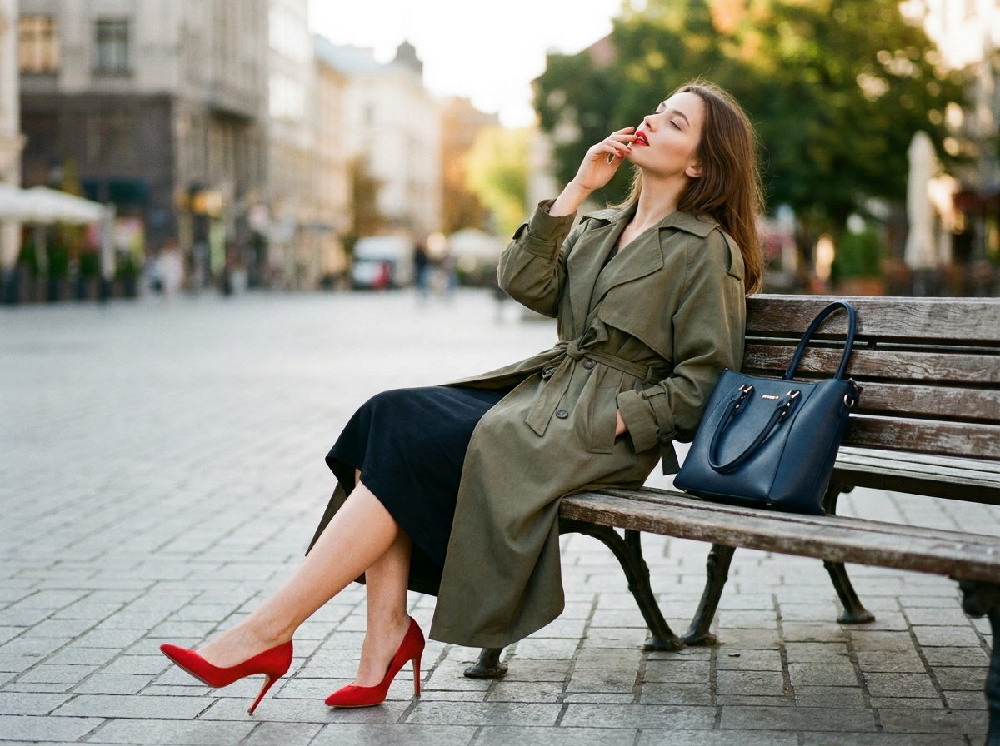
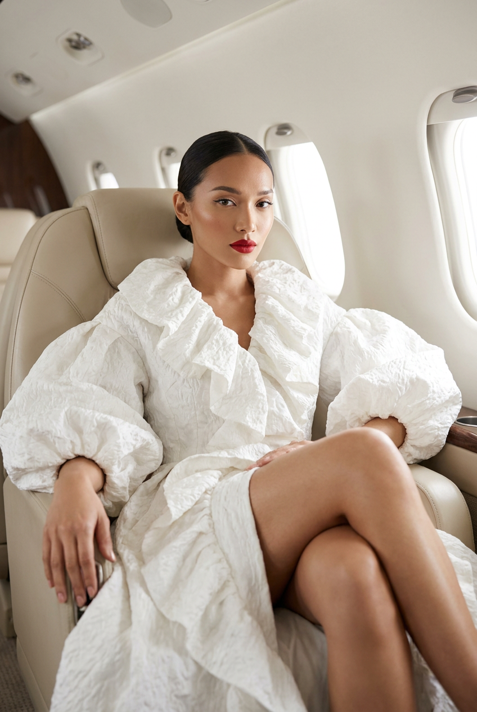
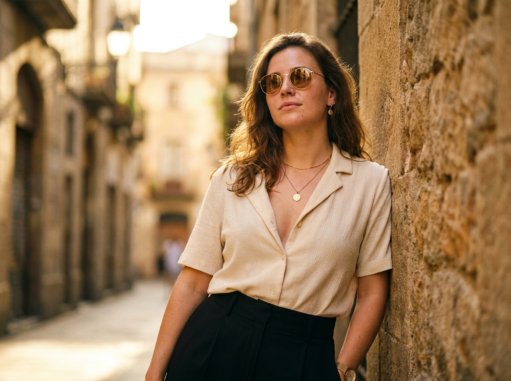
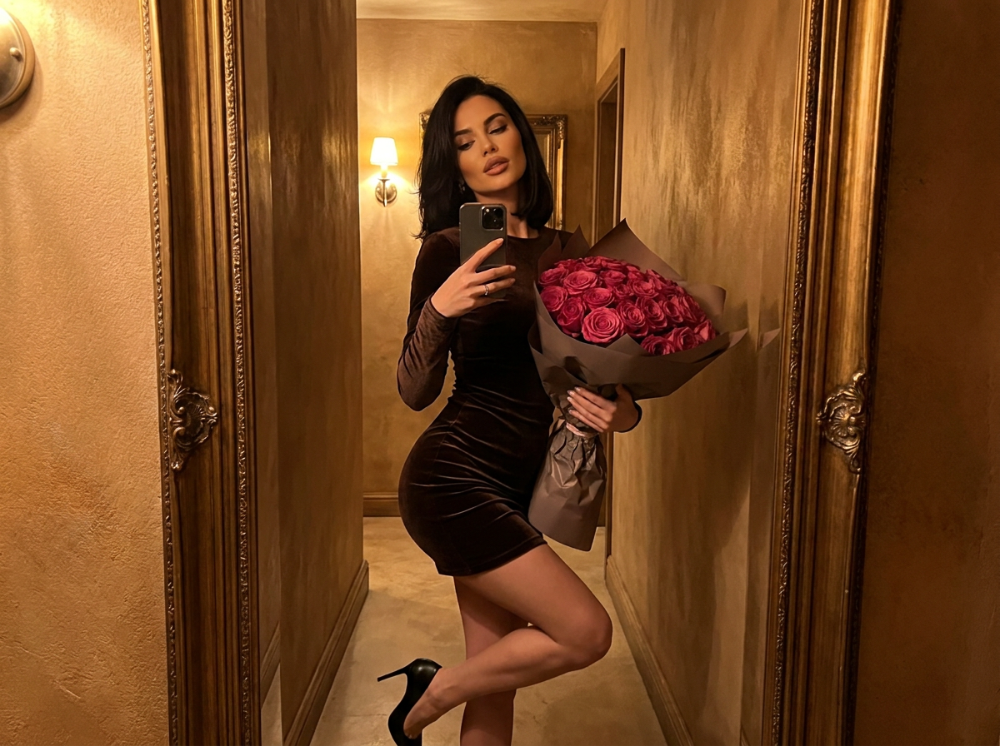
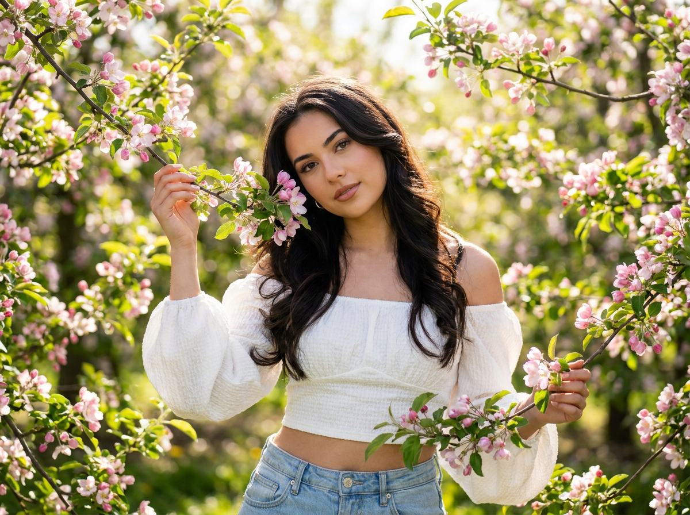
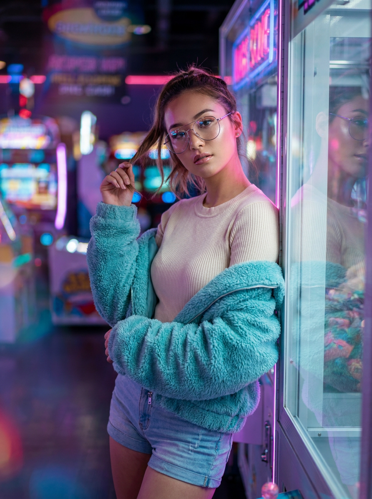

ИИ-фото для девушек: 10 промптов для нейросети

Обычная фотография не всегда передаёт нужное настроение: мешают случайный фон, неудачный свет, одежда и отсутствие времени на съёмку. Генерация помогает собрать образ с нуля и получить кадр в стиле обложки журнала, даже если под рукой только селфи.
В подборке — десять сценариев для девушек: от аристократичного fashion-портрета и сада с гортензиями до салона частного самолёта, зеркального селфи и неоновой аркады. Каждый промпт рассчитан на работу с фото-референсом лица.
Как сгенерировать такое фото: пошагово
Нужен снимок анфас при ровном свете, лицо в кадре целиком, без тёмных очков и головных уборов. Разрешение от 1000 пикселей по короткой стороне. Чем чётче исходник, тем точнее модель повторит черты.
Выберите сценарий ниже и нажмите «Копировать» — текст уйдёт в буфер целиком, вместе с командой сохранения внешности. Эта команда стоит первой строкой и отвечает за то, чтобы на выходе было ваше лицо, а не случайное.
Кнопка «Сгенерировать» рядом с каждым промптом открывает модель в новой вкладке. Nano Banana Pro работает с референсом лица — в отличие от моделей, которые генерируют портрет с нуля и узнаваемость теряют.
Промпт — в поле ввода, портрет — через загрузку референса. Порядок значения не имеет, но без референса команда сохранения внешности работать не будет: модели нечего сохранять.
Для сторис и ленты берите 9:16, для превью и обложек — 4:3. Первый результат редко идеален: если поза или свет ушли не туда, поправьте соответствующую часть промпта и запустите заново. Обычно хватает двух-трёх итераций.
10 промптов для генерации
1. Изумрудный fashion-портрет
Строго сохранить внешность по загруженному референсу: черты лица, пропорции, мимику и текстуру кожи без изменений. Фотореалистичный fashion-editorial портрет женщины за столом на открытом воздухе, дорогая журнальная съёмка с элегантным, статусным настроением. На ней глубокое изумрудно-зелёное шерстяное oversize-пальто, под ним видно светлое белое шелковистое платье. Девушка сидит боком, корпус немного развёрнут к камере, локоть лежит на столе, одна рука изящно поддерживает лицо. Взгляд спокойный, уверенный, чуть холодный и надменный, но женственный и аристократичный. Натуральная кожа с ровным тоном и мягким glow, выразительные скулы, гладкие брови, аккуратный luxury-макияж, идеально очерченные губы с насыщенной красной помадой, деликатный хайлайтер. Мягкий естественный свет, реалистичная фактура тканей, малая глубина резкости, объектив 85 мм, диафрагма f/2, вертикальный кадр 2:3.
2. Красное пальто у окна

Строго сохранить внешность по загруженному референсу: черты лица, пропорции, мимику и текстуру кожи без изменений. Кинематографичный фотореалистичный портрет по грудь в эстетике high-fashion editorial. Женщина слегка повёрнута корпусом, смотрит прямо в объектив, губы чуть приоткрыты и покрыты ярко-красной помадой. Волосы уложены в ретро-glam стиле, макияж выразительный: чёрная графичная стрелка, аккуратный тон кожи, мягкие тени. На девушке ярко-красное пальто плотной ткани с безупречным кроем. Чёрная кружевная перчатка на поднятой руке, пальцы легко касаются подбородка и губ, поза выглядит соблазнительно, но изысканно. Украшения лаконичные — небольшие элегантные серьги. Съёмка ведётся через стекло или окно: на переднем плане мягкие отражения, полупрозрачные полосы и лёгкие блики. Тёмный размытый фон, мягкое боке, городская атмосфера golden hour, объектив 85 мм, f/1.8, вертикальная композиция.
3. Тёплый свет заката

Строго сохранить внешность по загруженному референсу: черты лица, пропорции, мимику и текстуру кожи без изменений. Вертикальный фотореалистичный outdoor-портрет на золотом закате, крупный план по грудь или плечи, камера расположена на уровне глаз. Девушка сидит или развёрнута на три четверти, корпус повернут вправо относительно зрителя, голова отведена влево, взгляд направлен в сторону, а не в объектив. На лице мягкая спокойная улыбка: ровная кожа, естественный макияж, аккуратные брови, лёгкий румянец, матовые или сатиновые губы. Глаза слегка прищурены от тёплого солнца, в них видны реалистичные блики. Волосы слегка волнистые, объёмные, отдельные пряди растрёпаны ветром, заметны тонкие flyaways. Сзади и сверху проходит контровый rim light, подсвечивающий контур волос. На девушке фактурный вязаный свитер тёплого терракотово-коричневого или каштанового оттенка. Натуральная цветокоррекция, объектив 85 мм, f/2, мягкая глубина резкости.
4. Гортензии у лица

Строго сохранить внешность по загруженному референсу: черты лица, пропорции, мимику и текстуру кожи без изменений. Фотореалистичный кинематографичный портрет в саду цветущих гортензий. В кадре девушка с каштаново-русыми или тёмно-русыми волосами, собранными в объёмную высокую причёску или полупучок; у висков выбиваются отдельные пряди. Она смотрит прямо в камеру, выражение спокойное, немного задумчивое, губы слегка приоткрыты. Макияж натуральный: подчёркнутые брови, мягкий румянец, нюдовый оттенок губ. Девушка держит у груди и рядом с лицом крупные шаровидные соцветия лавандово-фиолетовых гортензий, пальцы касаются цветов, на руке видны кольца, одно из них заметнее остальных. Ещё несколько соцветий расположены ближе к объективу справа и снизу, создавая декоративную цветочную рамку. Одежда — лёгкая светло-розовая или пастельно-белая блуза либо платье с мягкими складками и открытыми плечами, романтичный свадебный стиль. Естественный дневной свет, объектив 85 мм, вертикальный портрет.
5. Оливковый тренч и каблуки

Строго сохранить внешность по загруженному референсу: черты лица, пропорции, мимику и текстуру кожи без изменений. Фотореалистичный кинематографичный street-style кадр в вертикальном формате: молодая женщина сидит на боковой части деревянной скамейки в парке или на городской улице. Одна нога слегка согнута и касается тротуарной плитки, вторая согнута сильнее и лежит поверх первой, не опираясь на землю. Поза расслабленная, но элегантная; корпус и голова отклонены назад, взгляд мечтательно направлен вверх, веки немного прикрыты. На девушке длинный свободный оливковый тренч из плотной матовой ткани, пояс завязан на талии, рукава естественно спущены, под ним видна часть платья простого силуэта. На ногах ярко-красные классические туфли stiletto на тонком высоком каблуке, обувь попадает в кадр целиком. Красная помада, чёткий контур губ, лёгкий румянец. Одна рука поднята к лицу, пальцы возле губ, вторая спрятана в кармане тренча. Волосы собраны в аккуратную укладку, мягкий дневной свет, объектив 50 мм, f/2.8.
6. Luxury-портрет в самолёте

Строго сохранить внешность по загруженному референсу: черты лица, пропорции, мимику и текстуру кожи без изменений. Фотореалистичный high-fashion editorial в салоне частного самолёта. Девушка сидит в светлом кожаном кресле, ноги скрещены, поза уверенная и расслабленная, взгляд направлен прямо в камеру. На ней роскошное белое или молочное кутюрное пальто-платье с объёмными рюшами, сложной фактурой и очень пышными рукавами — образ выглядит как дорогая журнальная съёмка. Волосы гладко убраны в низкий пучок. Макияж гламурный, но чистый: выразительные брови, аккуратные стрелки, нежный ровный тон кожи и насыщенная красная помада. Интерьер самолёта светлый, минималистичный и премиальный, справа через иллюминаторы льётся мягкий естественный дневной свет, тени деликатные. Чистая композиция в духе luxury lifestyle и magazine cover, резкость на лице, высокая детализация, реалистичная кожа, cinematic lighting, вертикальный портрет 2:3, объектив 50 мм, f/2.2. Без искажения лица, лишних пальцев, пластиковой кожи и неестественных складок одежды.
7. Золотой свет переулка

Строго сохранить внешность по загруженному референсу: черты лица, пропорции, мимику и текстуру кожи без изменений. Вертикальный фотореалистичный кинематографичный портрет молодой женщины в узком городском переулке. Она стоит в пол-оборота и слегка опирается на каменную стену или панель справа, корпус повёрнут влево, лицо поднято вверх, выражение спокойное и уверенное. Глаза скрыты за золотисто-бежевыми солнцезащитными очками, на линзах заметны естественные блики. На девушке кремово-бежевая светлая блуза или рубашка с короткими рукавами и тонкой фактурой ткани, расстёгнутая до уровня груди; рукава свободные, складки выглядят натурально. Высокие чёрные брюки или юбка-брюки с матовой фактурой и чёткой высокой линией талии. На шее тонкая золотая цепочка с круглым медальоном, в ушах небольшие серьги, на запястье тонкий браслет или часы с золотым акцентом. Волосы слегка волнистые, у корней объём, часть прядей откинута назад, отдельные волоски подсвечены солнцем. Объектив 50 мм, f/2, мягкий городской свет.
8. Букет в зеркальном селфи

Строго сохранить внешность по загруженному референсу: черты лица, пропорции, мимику и текстуру кожи без изменений. Фотореалистичное mirror selfie женщины в узком коридоре с фактурными стенами и тёплым рассеянным освещением. Девушка держит огромный букет роз насыщенного тёмно-розового оттенка, цветы обёрнуты в бумагу глубокого taupe-цвета. На ней облегающее мини-платье из тёмно-коричневого бархата с длинными рукавами и туфли на высоком каблуке. Поза уверенная и соблазнительная: одно колено слегка согнуто, бедро отведено в сторону, корпус расслаблен. Взгляд направлен в зеркало, выражение лица спокойное, дерзкое и женственное. В отражении хорошо видны фактура бархата, плотность букета, естественные пропорции тела и детали коридора. Тёплый ambient light, выразительный кинематографичный контраст, мягкие тени, luxury Instagram aesthetic, ultra-realistic details. Съёмка на смартфон через зеркало, вертикальный кадр 4:5, без лишних отражений, пересветов, деформации рук и нечитабельных деталей.
9. Яблоневый сад в цвету

Строго сохранить внешность по загруженному референсу: черты лица, пропорции, мимику и текстуру кожи без изменений. Реалистичная яркая летняя фотография в вертикальном формате: девушка стоит в густом цветущем саду среди ветвей яблони с розовыми цветами и зелёными листьями. Ветки окружают её со всех сторон и формируют плотную природную рамку вокруг фигуры. Поза на три четверти, корпус слегка развёрнут, голова немного наклонена, взгляд прямо в объектив, выражение расслабленное и красивое. Левая рука поднята вверх и держит ветку рядом с левой стороной головы, вторая опущена и удерживает ветвь справа на уровне бедра. На девушке белый кроп-топ с открытыми плечами, объёмными рукавами и фактурной тканью, светлые голубые джинсы. Волосы, макияж, мимика и пропорции лица выглядят естественно и соответствуют фото-референсу, без омоложения или изменения индивидуальности. Солнечный дневной свет, насыщенные, но натуральные цвета, мягкое боке на переднем плане, объектив 50 мм, f/2.8, высокая детализация цветов и кожи.
10. Неон и бирюзовый мех

Строго сохранить внешность по загруженному референсу: черты лица, пропорции, мимику и текстуру кожи без изменений. Фотореалистичный вертикальный fashion-портрет в неоновой атмосфере ночной аркады, ретро-кинотеатра или игрового зала. Девушка стоит или слегка опирается рядом со стеклянной витриной либо прозрачной перегородкой, тело расслабленно и немного развёрнуто вбок, голова повернута к камере. Взгляд спокойный, уверенный, слегка загадочный. Одна рука поднята к волосам и легко наматывает прядь на палец, вторая опущена или лежит на талии. На ней тонкий светлый облегающий лонгслив или ribbed top молочно-белого цвета, сверху свободно накинута объёмная бирюзовая, мятно-голубая меховая или пушистая куртка. Неоновая подсветка в оттенках cyan, turquoise и розового отражается в стекле и на волосах, фон заполнен мягкими огнями вывесок и размытыми цветными пятнами. Эстетика ночного ретро-кино, выразительный контраст, реалистичная кожа, резкость на лице, объектив 35 мм, f/1.8, вертикальный кадр 2:3.
Что важно учесть в этом стиле
Fashion-кадр держится не только на красивой одежде. Нейросети нужно задать позу, направление взгляда, источник света, фокусное расстояние и глубину резкости. Если написать лишь «роскошный портрет», модель сама выберет композицию — и результат может оказаться слишком общим.
Для работы с лицом используйте чёткий референс без сильных фильтров, очков и резких теней. Лучше всего подходят фронтальные снимки и ракурсы в три четверти, где хорошо видны глаза, нос, губы и линия подбородка. Даже при хорошем исходнике понадобится несколько генераций: мелкие отличия во внешности, пальцах и украшениях встречаются регулярно.
Идеи для вариаций
- Замените красную помаду на ягодный тинт, карамельный нюд или глянцевый винный оттенок.
- Перенесите сцену с тренчем на мокрую улицу после дождя, добавив отражения витрин.
- Поменяйте гортензии на пионы, сирень или белые розы, сохранив цветочную рамку.
- Для неонового кадра задайте палитру фиолетового, синего и кислотно-жёлтого света.
- Добавьте к портрету в самолёте поднос с кофе, журнал или тёмные солнцезащитные очки.
- Сделайте летний садовый кадр на плёнку: лёгкое зерно, тёплый баланс белого и эффект старой фотокамеры.
Как собрать свой промпт
Сначала опишите тип кадра и локацию: портрет по грудь, полный рост, сад, переулок или интерьер. Затем добавьте позу, направление головы, выражение лица и действие рук. После этого переходите к одежде, причёске, макияжу и деталям вроде колец, очков или фактуры ткани.
В финале укажите свет и технику: например, объектив 85 мм, диафрагма f/2, мягкое боке, вертикальный формат 2:3. Для стабильного результата полезно отдельно прописать нежелательные элементы — искажённые кисти, лишние пальцы, двойные украшения, неестественную кожу. Если лицо «уплывает», уменьшите стилизацию и сделайте 3–5 попыток с одним и тем же референсом.
Ошибки, из-за которых кадр не получается
- Слишком много задач в одной фразе. Когда в промпте смешаны несколько локаций и нарядов, нейросеть начинает объединять их в один странный образ.
- Нет описания кадрирования. Без слов «по грудь», «полный рост» или «вертикальный портрет» композиция может обрезать обувь, руки или цветы.
- Референс низкого качества. Размытое селфи, сильный фильтр и частично закрытое лицо ухудшают сходство.
- Противоречивые указания. Например, «взгляд в сторону» и «прямо в объектив» одновременно приводят к неестественной мимике.
- Игнорирование рук. Если не уточнить положение пальцев, модель часто добавляет лишние суставы или превращает украшения в случайные пятна.
- Чрезмерная ретушь. Слова вроде «идеальная фарфоровая кожа» нередко дают пластиковое лицо и стирают индивидуальные черты.
Частые вопросы
Как сделать такое ИИ-фото бесплатно?
Попробовать можно в Kandinsky и Шедевруме: у них есть бесплатная генерация, но число попыток, скорость и качество зависят от текущих правил сервиса. Krea AI и Arena.ai позволяют тестировать разные модели, однако доступ к референсу лица, разрешение и количество генераций могут быть ограничены. Бесплатные режимы не всегда точно сохраняют идентичность: чаще всего лицо приходится уточнять несколькими дублями и выбирать лучший результат.
Как сохранить сходство с лицом на фото?
Загрузите чёткий референс при равномерном освещении и без сильной обработки. В промпте отдельно укажите сохранение формы глаз, носа, губ, овала, линии подбородка и возраста. Не перегружайте описание лица макияжем и не меняйте одновременно причёску, ракурс и эмоцию — это повышает риск потери сходства.
Какой формат выбрать для аватарки или поста?
Для сторис и вертикальных публикаций подойдёт соотношение 2:3 или 4:5. Для аватарки лучше квадрат 1:1 и крупный план по плечи, чтобы лицо не потерялось после обрезки. Если нужен полный рост, заранее оставьте в описании свободное пространство над головой и под ногами.
Почему нейросеть искажает пальцы и украшения?
Кисти в сложной позе, тонкие цепочки и мелкие кольца относятся к деталям, которые генераторы часто рисуют нестабильно. Упростите положение рук, уменьшите число украшений и добавьте негативные указания: без лишних пальцев, двойных колец и деформированных кистей. После генерации проверьте руки и аксессуары отдельно.